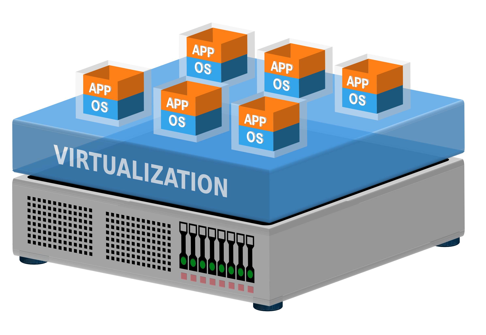

Compétences
Gestion de réseaux avec VLAN, Stormshield, DHCP et Kwartz.
Administration des systèmes Linux et Windows.
Utilisation de Nagios et SNMP pour surveiller les infrastructures.

Virtualisation avec Vagrant, Terraform, VBOX et Proxmox.
Rédaction et documentation technique.

Maîtrise avancée de l'anglais professionnel.

Utilisation avancée de la suite Office 365.
Saisie rapide et précise au clavier.